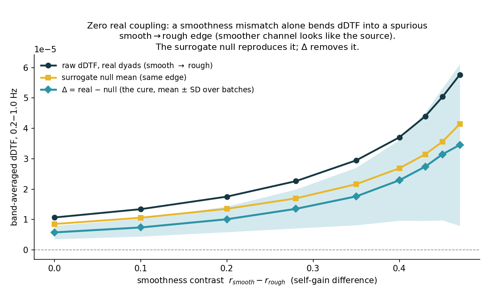
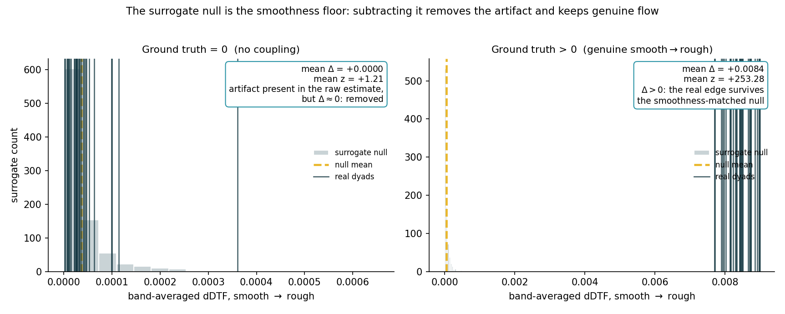

Two independent AR(2) resonators at a common 0.3 Hz peak, differing only in pole radius (self-gain). Zero injected coupling. Run through the real Stage 4 estimator (p=4, 10 s / 50% windows, 0.2–1.0 Hz band) and the real Stage 5 surrogate + delta machinery.


| r_smooth | contrast | real | null mean | Δ | z |
|---|---|---|---|---|---|
| 0.50 | +0.00 | 0.00001 | 0.00001 | +0.00001 | +1.12 |
| 0.60 | +0.10 | 0.00001 | 0.00001 | +0.00001 | +1.17 |
| 0.70 | +0.20 | 0.00002 | 0.00001 | +0.00001 | +1.25 |
| 0.78 | +0.28 | 0.00002 | 0.00002 | +0.00001 | +1.36 |
| 0.85 | +0.35 | 0.00003 | 0.00002 | +0.00002 | +1.35 |
| 0.90 | +0.40 | 0.00004 | 0.00003 | +0.00002 | +1.45 |
| 0.93 | +0.43 | 0.00004 | 0.00003 | +0.00003 | +1.49 |
| 0.95 | +0.45 | 0.00005 | 0.00004 | +0.00003 | +1.49 |
| 0.97 | +0.47 | 0.00006 | 0.00004 | +0.00003 | +1.34 |